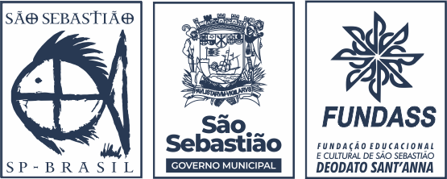

<footer class="px-4 py-8 bg-amber-200">
    <div class="container flex flex-wrap items-center justify-center mx-auto space-y-4 sm:justify-between sm:space-y-0">
      <div class="flex flex-row pr-3 space-x-4 sm:space-x-8">
        <div class="flex items-center justify-center w-64 h-64">
            
        </div>
      </div>
      <ul class="flex flex-wrap pl-3 space-x-4 sm:space-x-8">
        <li>
          <a rel="noopener noreferrer" href="https://www.instagram.com/cultura.fundass/">Instagram</a>
        </li>
        <li>
          <a rel="noopener noreferrer" href="https://www.facebook.com/cultura.fundass">Facebook</a>
        </li>
        <li>
          <a rel="noopener noreferrer" href="https://www.youtube.com/channel/UCq4nB2jkhnFNac25LzEnvag">Youtube</a>
        </li>
      </ul>
    </div>
    <div class="text-sm text-center">© 2024 Desenvolvido pelos alunos da UNIVESP.</div>
  </footer>
